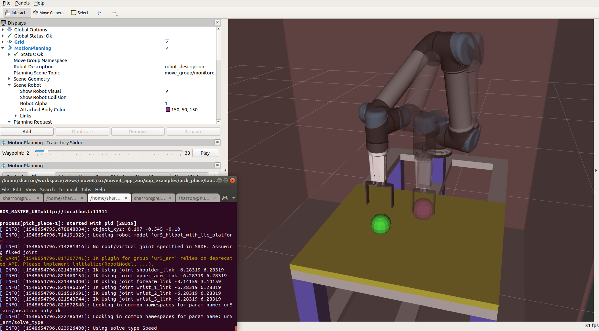

[App Tutorial Template]¶
Overview¶
(Describe what this application is in one topic sentence, followed by a paragraph telling what this application does in details. E.g.)
A template of application tutorial. The application tutorial contains an overview of the application, requirements on hardware and software, guidance to download/build/launch the application, expected output from the application, and customization notes.
Requirements¶
(Describe the hardware and software requred to setup the environment for this application. Provide hyperlinkage to the procurement info or installation guides. E.g.)
- Hardware
- Host running ROS2
- Robot Arm (optional)
- Software
- ROS2 Dashing Desktop
- robot_interface
Download and Build the Application¶
(Describe how to download and build the application. List build options specific to this application. E.g.)
cd <path_of_your_ros2_workspace>/src
git clone https://github.com/intel/ros2_grasp_library.git
cd ..
colcon build --symlink-install --ament-cmake-args -DBUILD_RANDOM_PICK=ON
- Build Options
- BUILD_RANDOM_PICK (ON | OFF ) Switch on/off building of this application
Launch the Application¶
(Describe how to launch the application. Provide hyperlinkage to launch robot contollers. List launch options specific to this application. E.g.)
- Launch this application
ros2 launch template template
- Launch Options
- grasp_xyz (double | “0.545 0.107 0.15”) Specify pick position in the “base” frame
- place_xyz (double | “-0.107 -0.545 -0.10”) Specify place position in the “base” frame
Expected Outputs¶
(Describe expected outputs from this application. Illustrate with screen snapshot when necessary. E.g.)
You should see Rviz output like this:
Customization Notes¶
(List possible customization items. Guide how to customize the application on new environment and new robots. E.g.)
- Change the pick position Use launch option “grasp_xyz” to change the pick position.
- Change the place position Use launch option “place_xyz” to change to place position.